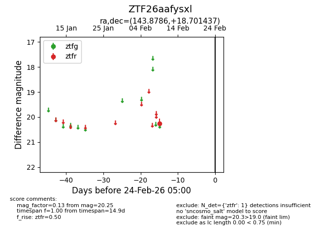
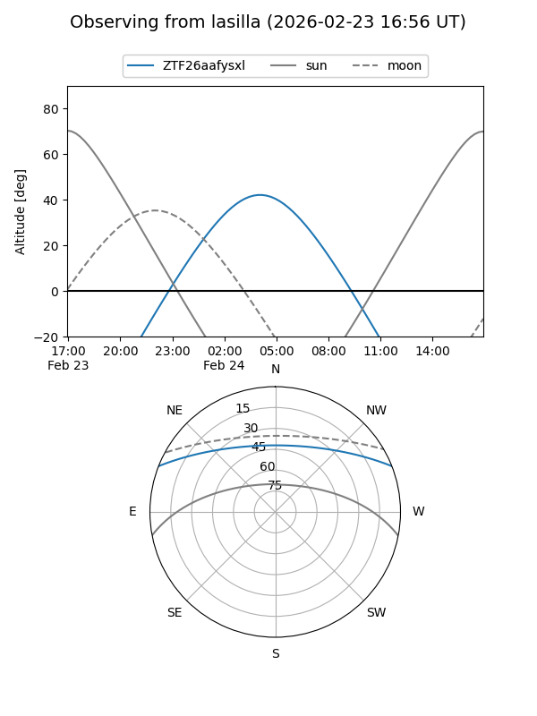
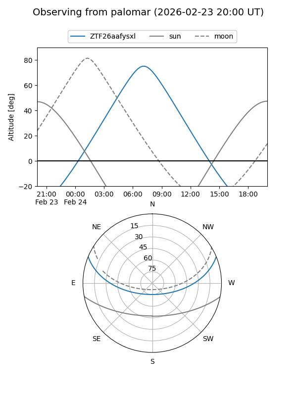

ZTF26aafysxl
Target ZTF26aafysxl at 2026-02-24 09:08
Aliases and brokers:
FINK: link
Lasair: link
ALeRCE: link
alt names
ZTF26aafysxl (ztf,fink_ztf)
Coordinates:
equatorial (ra, dec) = 143.8786,+18.70144
equatorial (HMS+DMS) = 09:35:30.86,+18:42:05.17
galactic (l, b) = (212.7799,+44.38484)
Flags:
Photometry:
last ztfr=20.25
1 ztfr detections
Lightcurve

Visibility


Additional plots